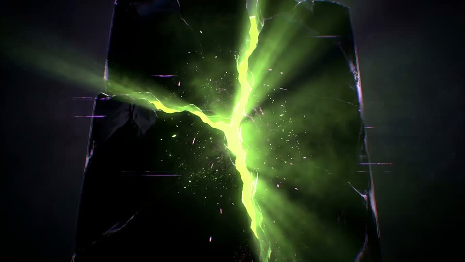

HUMAN
GLITCHE · STUDIO
ENTRAR ↵
Estudio de contenido visual
TODA GIRA,
TODA MARCA,
ES UNA
INTERFAZ
El problema
LA MAYORÍA
LA DEJA EN MANOS
DE
PLANTILLAS
Lo que hacemos
NOSOTROS DISEÑAMOS
LA
EXPERIENCIA
QUE TU PÚBLICO VA A VIVIR
Cómo
MAPPING · VFX
3D · IA
EN VIVO Y EN PANTALLA
80×200 M
Mapping · Proyecto Marea
TOMORROWLAND
Malena Narvay · 2025
LOLLA
Luck Ra · Lil Cake · Oscu
SCROLLEÁ
↓
HUMAN
GLITCHE
El estudio que crea el
contenido de más alta calidad
para marcas y artistas masivos.
ENTRAR
↵

HUMAN
GLITCHE
Contenido visual de altísima calidad para marcas y artistas.
ENTRAR
↵